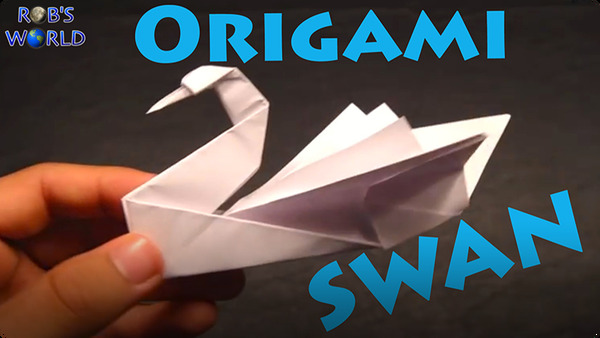

Origami Designs
About Us
Follow Us
press on the Origami to see how it is made

intresting facts about hummingbirds
- They are the smallest migrating bird
- The name, hummingbird, comes from the humming noise their wings make as they beat so fast
- Hummingbirds are the only birds that can fly backwards

- They are huge! Trumpeter swans are the largest native waterfowl and the heaviest flying birds in North America
- They have their own constellation
- They live for a long time